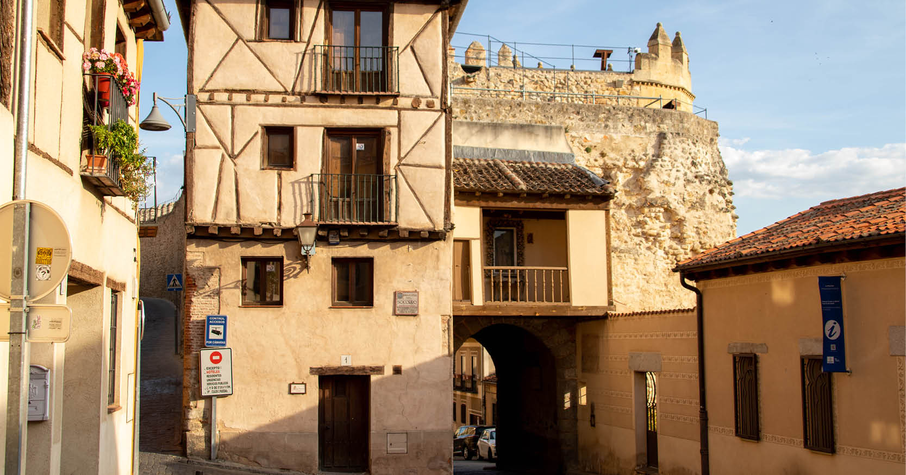

8 Top Things to Do in Segovia
Segovia is not a big city or a Spanish coastal paradise, however it’s still a must-see sight to visit in the Iberian Peninsula.
It’s situated in central Spain’s region of Castile and León and has been a World Heritage City since 1985.
Different civilizations have called Segovia home over the centuries; and the locals, known as segovianos, welcome the visitors with a variety of cultural and culinary traditions.
I assure you there are many things to do and places to explore in Segovia, but if you’re short on time, you need to prioritise.
Read on and choose wisely what to put on your list.
1. Walk around and under the Aqueduct
This impressive construction is the most iconic landmark in Segovia. It’s made the Castilian city world-known and is even the main motif of the town crest.
The Aqueduct was built by the Romans more than 2,000 years ago to carry water from the River Acebeda to the city along 16km (almost 10 miles).
It’s one of the most well-preserved constructions of its kind in Europe, which is impressive if you think how it was built. The 20,400 blocks stay in their place due balance of forces without any mortar or cement between them.
The best place to appreciate this marvel is the Azoguejo Square or Plaza del Azoguejo, where the Aqueduct reaches 28m (92 feet) height. A walk between one of the 120 pillars will make you feel tiny in comparison.
2. Walk to the Casa de los Picos and the Canaleja Viewpoint
Just a few minutes from the Aqueduct, you’ll find the perfect spot to appreciate Segovia’s skyline. A little square known by the locals as the Canaleja Mirador. Golden sunsets reflected on typical Castilian houses and red roofs that contrast with the far away mountains of Guadarrama - idyllic, isn’t it?
This is definitely the point to get that postcard picture to
show to your friends and family. And you can also enjoy a glass of wine or a
meal while contemplating the views!
When you turn around from the viewpoint, you’ll see the Casa de los Picos, a fortress building from the 15thcentury (Renaissance) that features a façade with 617 granite blocks carved into pyramid-shaped reliefs.
It was owned by the De la Hoz Family, whose coat of arms is on the façade above the balcony. The house currently hosts the Segovia Art School.
3. Visit Plaza Mayor and the Cathedral
Like any other Spanish town or city, Segovia has its own Plaza Mayor. Situated in the heart of the walled city, this main square hosts the last Gothic cathedral built in Spain.
The construction of the church took almost 200 years and it has three doorways: the Puerta del Perdón; the entrance of Juan Guas and the San Geroteo; and the San Frutos Doors at the southern face.
San Miguel Church is just opposite the cathedral and was built in 1558 to replace the previous building that tumbled down years before. Isabella l of Castile was proclaimed Queen in this temple when Spain was just about to start leading as a world power.
But Plaza Mayor isn’t just about churches, there are loads of pubs to sit outside and have a caña (draught beer) and tapas while contemplating the arcades and cute coloured houses around the square.
4. Stroll through the Jewish Quarter
The first reports of the presence of Judaism in the city of Segovia date back to 1215. In the 14th-century, the community was made up of around one hundred families. Both Christians and Jews lived together without any problem. But eventually, the Catholic Monarchs decided to segregate the communities. The Hebrew district housed two synagogues and was enclosed by eight gates, three of which are still present in the city.
But after the segregation, in 1492 Jewish people were expelled from the city of Segovia as the Monarchs ordered.
The layout of the quarter at the southern side of the walled
city remains practically intact. A walk to the Aid Square (Plaza del Socorro) is
worthwhile and the old architecture will transport you to the Middle Ages.

The First Main Synagogue (Mayor) and the Old Synagogue (Vieja)
were confiscated from the Jewish in the 15
th-century to become
Christian churches which remain nowadays.
5. Visit the Alcázar
It’s said that two different castles inspired the design of Walt Disney’s fairy tale Cinderella palace: Neuschwanstein Castle in Germany and the Alcázar of Segovia in Spain.
I’m not surprised, because the Alcázar (meaning fortress in Spanish) is a beautiful medieval construction on top of a Roman citadel. The first mention of this castle was found in 1120, and it’s posed as a royal palace, a state prison, the Royal Artillery College and a military academy.

Situated at the west side of Segovia, the Alcázar is best
admired from the distance; and one of the best places to do that is the
viewpoint at Pradera de San Marcos. If you decide to go inside and learn about
its history, you can get a ticket that gives you access to the living quarters,
the Artillery Museum, and a Tower that boasts impressive views of the city of
Segovia.
6. (Warning for veggies & vegans) Eat Roasted Suckling Pig
Have you ever wondered why pork meat is so present in Spain, why jamón ibérico, chorizo, morcilla or salchichón are stars of the country’s culinary traditions?
The explanation has to do with religion. Jewish and Muslims,
who don’t eat pork, were outlawed during the Spanish Inquisition (15
th-century).
And an easy way to avoid trouble and prove you were Christian was to eat this
type of meat.
Although Spain nowadays has nothing to do with those obsolete laws, the tradition of eating pork has persisted, and it’s a must in every kitchen.
The cochinillo or roasted suckling pig is a popular dish in the region of Castile and León. However, there’s something specific to the way segovianos present the meal. They cut the little pig with a plate that’s then thrown against the floor; and once that’s broken, they serve the food.
They say Cándido López invented the tradition. He simply started to serve a suckling pig at his restaurant and realised he didn’t have any knife at hand. So he got a plate and proceed with the meat cutting with that instead.
This delicious meal cooked with just water, salt and local spices might look a bit creepy at first for those not used to it, but it’s delicious. And as a note to assure food is not a joke topic for Spaniards, you should know that there’s a bronze statue of Cándido near the Aqueduct, outside the restaurant with his name.
7. Go to Plaza Medina del Campo
Medina del Campo Square is situated at the south of the walled city, and it embodies Segovia’s history. It’s lined by an impressive number of monuments such as:
San Martin Church – the Baroque 12th-century temple houses an excellent altarpiece and has four large sculptures on its façade.
Juan Bravo statue – he was a Castilian comunero, that means he fought at the War of the Communities of Castille against the rule of Charles l and his administration.
The two Sirens – made by Franciso Bellver in 1852, they resemble two sphinxes. They have a human upper body, lion legs and bird wings.
This
square often hosts live music and theatre shows - a great place to explore.
8. Get lost in its streets
If you don’t have much time or prefer to enjoy the culture and traditions of the city at your own pace, aimless walks around the city will always amaze you.
The narrow lanes surrounded by typical houses often lead to
open squares where you can encounter the locals eating tapas and people-watching.
Mingle with them and stop at culinary delicatessen shops to enjoy a good
jamón
ibérico
or get yourself a gift and buy an ornament to bring back home with
you to remember Segovia forever.
Segovia is definitely a place I recommend to stop by when travelling
in Spain. You can visit it on Rabbie’s
Southern
France, the Pyrenees & La Rioja 6 day tour
from Madrid.
Your handy sightseeing map
Meet the Author
María
Email Marketing and Design Executive
María works for Rabbie’s and loves discovering new places around the world (and, apparently, trying weirdly coloured drinks when travelling abroad).
When she’s not designing or sending our latest news to our friends, she likes keeping fit and cooking delicious Spanish omelettes.
Explore Further
 Tour Ireland
Tour Ireland